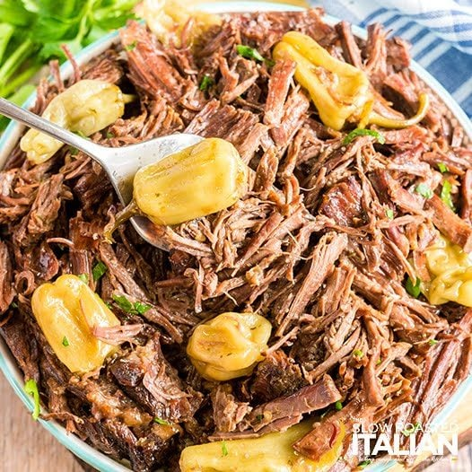

Mississippi Mud Roast

Description
Mississippi Mud Roast is an incredibly flavorful recipe that takes only minutes of preparation.
Ingredients
- 1 three to five pound roast
- 1 stick of butter
- 1 packet of au jus mix
- 1 packet of ranch dressing mix
- A dozen or so pepperoncinis
- Place the roast in a crock pot with the fat side facing down.
- Completely cover the roast with the dry spice packets, then place the stick of butter and pepperoncinis on top.
- Close the lid and cook on low for 6-8 hours. More time will help improve texture.